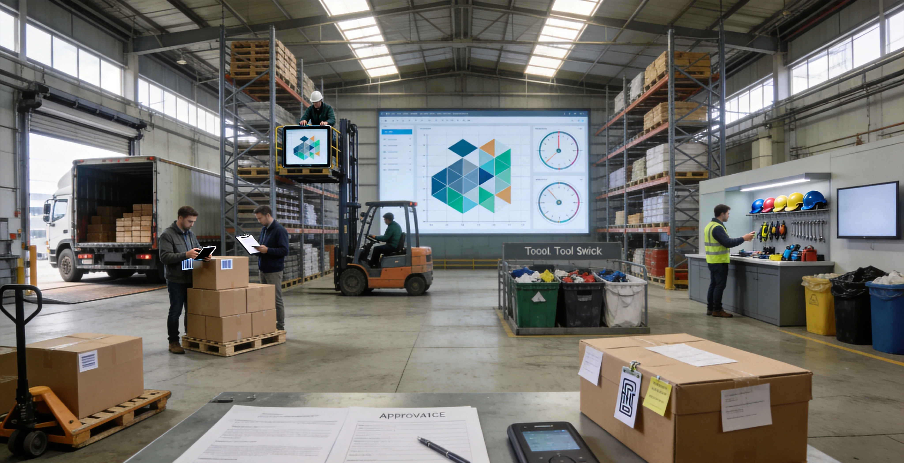
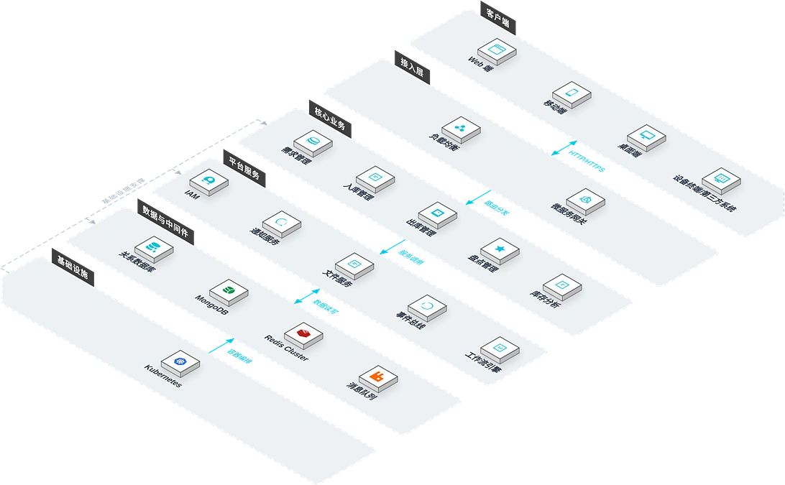
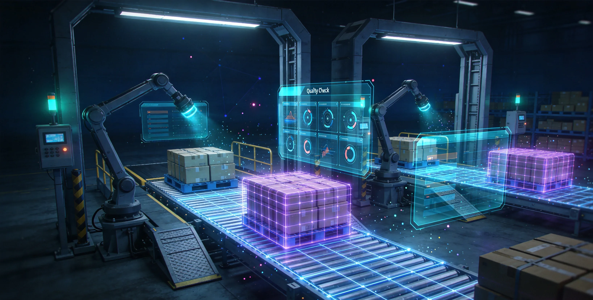
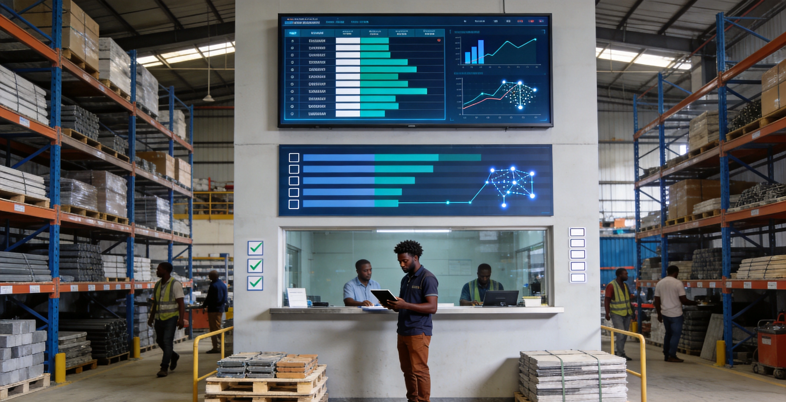
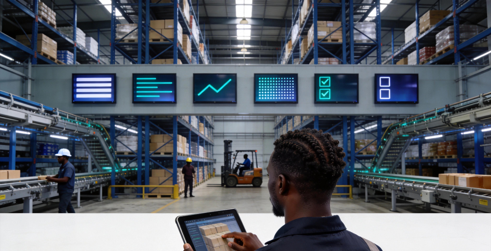

物资管理系统是面向工程项目的物资全流程数字化仓储管理平台。针对物资种类繁杂、周转频繁导致的库存不准、积压或短缺等管理难题，系统覆盖需求提报、验收入库、出库领用、劳保用品与工器具领用管控、盘点清查与废旧处置等全流程，实现多仓联动与物料追溯，帮助企业精准掌控库存、降低仓储成本、保障施工物资及时供应。

核心功能
系统覆盖需求、验收、入库、出库、盘点、废旧、劳保工器具、土方等全流程核心模块。
需求管理
实时查看库存数据与预警状态，支持按物料、班组发起领料申请。
审核管理
对物料申领、入库单与出库单进行多级审核与电子签名。
验收管理
对采购到货、调拨及集采物资进行数量与质量验收，支持分批验收。
入库管理
管理验收合格物料的入库登记、库位分配与入库流水查询。
出库管理
按领料申请进行物料出库清点、库位分配与出库流水记录。
盘点管理
定期或临时对仓库物料进行库存盘点，支持扫码盘点、批量操作与盘盈盘亏调整。
废旧物资
对报废物料进行登记、盘点与流水管理。
班组消耗
按班组统计物料领用与消耗情况。
劳保工器具
定义劳保用品与工器具的领用周期及以旧换新规则。
土方管理
管理土方作业面与车辆档案，跟踪运输轨迹。
系统架构
系统架构

系统采用仓储全流程+作业引擎架构：PDA扫码枪、RFID读写器、车载终端、电子秤与打印机构成五类现场作业终端；独立仓储作业引擎层涵盖入库、出库、库内与波次拣货四大引擎；条码/RFID服务实时采集作业数据；库存服务基于Redis Cluster实现高并发扣减；调拨服务基于DotNetCore.CAP保障分布式事务一致性。
应用场景
适用于多仓联动库存管控、物料验收与入库追踪、班组领料与消耗分析、库存盘点与废旧管理等场景。
多仓联动库存管控
集团总部仓、区域仓与项目仓通过系统统一管理，库存数据实时同步，支持跨仓调拨与库存预警。

物料验收与入库追踪
对采购到货、调拨及集采物资进行数量与质量验收，支持分批验收与入库流水全程可追溯。

班组领料与消耗分析
工长按班组发起领料申请，系统按班组自动统计物料领用与消耗情况，为成本核算提供数据支撑。

库存盘点与废旧管理
支持扫码盘点、批量操作与盘盈盘亏调整，废旧物资登记、盘点与流水全程规范管理。
优势与保障
条码/RFID 自动识别
支持条码与 RFID 自动识别，提升现场作业效率与数据采集准确度，减少人工录入差错。
多系统深度集成
与 ERP、采购、工程预算管理系统深度集成，实现业务数据互通，库存-采购-预算联动。
离线操作保障
适配非洲本地网络环境，支持离线操作与数据同步，网络中断时业务不停止。
多仓联动管理
集团、区域、项目多级仓库统一管理，库存数据实时同步，物资调拨高效透明。
全生命周期追溯
覆盖需求提报、验收入库、出库领用、劳保用品与工器具领用管控、盘点清查与废旧处置全流程。
库存预警
支持按安全库存、保质期、呆滞物资设置自动预警，缺料与积压风险提前发现。
需求调研
深入了解企业仓储业务流程与多仓架构，梳理入库、出库、盘点、调拨规则与集成需求。
系统部署
支持本地化部署与云端部署，适配非洲本地网络环境与离线操作场景。
培训上线
提供管理员与终端用户分层培训，覆盖条码/RFID 操作、入库出库、盘点调拨与报表使用。
持续运维
7×24 小时远程技术支持，定期系统巡检与功能迭代，离线同步策略持续优化。
数据安全
库存数据加密存储与传输，权限分级管控，操作日志全量记录，支撑合规审计。
升级扩展
支持新仓库、新物料类别、新集成系统灵活接入，按企业需求扩展物资管理覆盖范围。